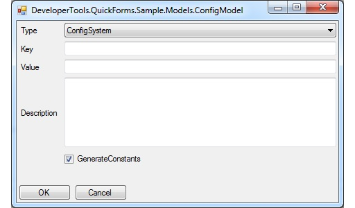
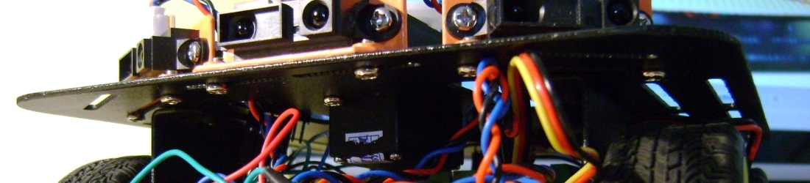

Simple Led Matrix Display
Source Code - 2015
DeveloperTools.QuickForms

Simple Model Based Windows Forms Dialog
Source Code - 2015
.Net, .Net CF, HTTP
Alternate implementation of ProtoBuffers for .Net, .Net CF.
Encoding Specification, Source Code - 2014
openCV, python, numpy, pywin32, autoit
Source Code - 2014
arduino, sensors, processing, udp
Details, Source Code - 2014
arduino, avr, c
More, Source Code - 2014
openCV, python, numpy, pywin32, autoit
Source Code - 2013
sharpdx
Download - 2013
android, arduino, bluetooth, voice-control
 Details, Source Code - 2012
xna
Details, Download, Microsoft XNA Framework Redistributable 4.0 - 2011